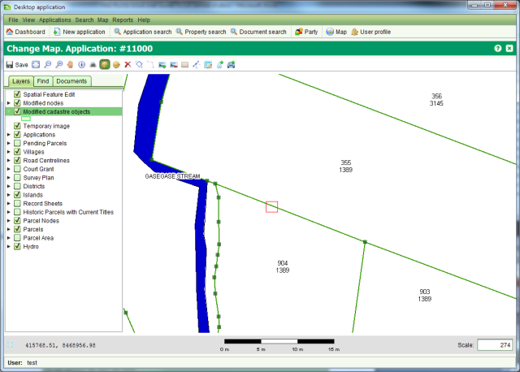
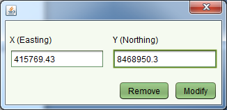
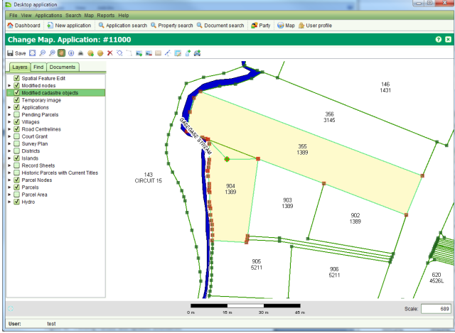

Nodes represent the fixed points of the parcel boundary. New nodes can be added using
the Add Node
tool and existing nodes can be relocated using the
Add Node
tool and existing nodes can be relocated using the Modify Node tool.
Modify Node tool.
To add a new node, use the Add Node tool to drag a small selection box around the
approximate location for the new node. Note that the selection box must be on top of an
existing boundary. If the selection box is not on top of an existing boundary, the tool will
not work.
Add Node tool to drag a small selection box around the
approximate location for the new node. Note that the selection box must be on top of an
existing boundary. If the selection box is not on top of an existing boundary, the tool will
not work.

Select the approximate location for a new node
You will then be prompted to enter the coordinates for the new node. Enter the appropriate coordinate value and click the Modify button. If you make an error, click Remove or close the dialog. This will cancel the add process.

Node Coordinate dialog
The boundaries of the two adjacent parcels will be modified to include the new node. The new parcel boundaries will appear in light green while the original boundary will remain dark green so that it is possible to differentiate between the two. Note that just like Record Plan, changes made to the cadastral network remain pending until the application containing the Change Map service is approved.

Pending parcels with updated boundaries
The Modify Node tool works in a similar way to the
Modify Node tool works in a similar way to the Add Node tool. Rather
than select selecting a boundary, drag the selection box around an existing node. The Node
coordinate dialog will reappear and you will be able to modify the coordinate of the node or
remove the node altogether by clicking the Remove button.
Add Node tool. Rather
than select selecting a boundary, drag the selection box around an existing node. The Node
coordinate dialog will reappear and you will be able to modify the coordinate of the node or
remove the node altogether by clicking the Remove button.